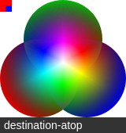
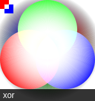
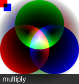

组合 Compositing
在之前的例子里面，我们总是将一个图形画在另一个之上，对于其他更多的情况，仅仅这样是远远不够的。比如，对合成的图形来说，绘制顺序会有限制。不过，我们可以利用 globalCompositeOperation 属性来改变这种状况。此外, clip属性允许我们隐藏不想看到的部分图形.
globalCompositeOperation
我们不仅可以在已有图形后面再画新图形，还可以用来遮盖指定区域，清除画布中的某些部分（清除区域不仅限于矩形，像clearRect()方法做的那样 ）以及更多其他操作。
- globalCompositeOperation = type
这个属性设定了在画新图形时采用的遮盖策略，其值是一个标识12种遮盖方式的字符串。
source-over
This is the default setting and draws new shapes on top of the existing canvas content.（这个是默认设置。新画的形状在已存在的图形上方。）

source-in
The new shape is drawn only where both the new shape and the destination canvas overlap. Everything else is made transparent.（新形状只有在新形状和目标画布重叠的地方才绘制。其他一切都是透明）
source-out
The new shape is drawn where it doesn't overlap the existing canvas content.(在不重叠现有画布内容的地方绘制新的形状)
source-atop
The new shape is only drawn where it overlaps the existing canvas content.(新图形只在与现有画布重叠的地方绘制)

destination-over
New shapes are drawn behind the existing canvas content.(新的形状被绘制在现有的画布内容后面)

destination-in
The existing canvas content is kept where both the new shape and existing canvas content overlap. Everything else is made transparent.(现有的画布内容保持在新的形状和现有的画布重叠的地方。其他一起都是透明的)
destination-out
The existing content is kept where it doesn't overlap the new shape.(现有的内容保留在不重叠新形状的地方)

destination-atop
The existing canvas is only kept where it overlaps the new shape. The new shape is drawn behind the canvas content.（现有的画布只保留与新图形重叠的地方。新的形状被绘制在画布的内容后面）

lighter
Where both shapes overlap the color is determined by adding color values.（在两种形状重叠的地方，颜色是通过添加颜色值来确定的）
copy
Only the new shape is shown.
xor
Shapes are made transparent where both overlap and drawn normal everywhere else.（重叠部分透明）

multiply
The pixels are of the top layer are multiplied with the corresponding pixel of the bottom layer. A darker picture is the result.（顶层的像素与底层的相应像素相乘。一般来说会更暗）

screen
The pixels are inverted, multiplied, and inverted again. A lighter picture is the result (opposite of multiply)（像素被倒转，放大和再次倒转。一般来说会亮一些）
overlay
A combination of multiply and screen. Dark parts on the base layer become darker, and light parts become lighter.（multiply和screen模式的组合。暗的地方变的更暗，亮的地方变的更亮）

darken
Retains the darkest pixels of both layers.（保留两层最暗的像素）
lighten
Retains the lightest pixels of both layers.（保留两层最亮的像素）

color-dodge
Divides the bottom layer by the inverted top layer.()
裁切路径 Clipping paths
裁切路径和普通的 canvas 图形差不多，不同的是它的作用是遮罩，用来隐藏不需要的部分。如右图所示。红边五角星就是裁切路径，所有在路径以外的部分都不会在 canvas 上绘制出来。
如果和上面介绍的 globalCompositeOperation 属性作一比较，它可以实现与 source-in 和 source-atop 差不多的效果。最重要的区别是裁切路径不会在 canvas 上绘制东西，而且它永远不受新图形的影响。这些特性使得它在特定区域里绘制图形时相当好用。
在 一章中，我只介绍了 stroke 和 fill 方法，这里介绍第三个方法 clip。
- clip() Turns the path currently being built into the current clipping path.
我们使用 clip() 方法来创建一个新的裁切路径。
默认情况下，canvas 有一个与它自身一样大的裁切路径（也就是没有裁切效果）。
clip 的例子
这个例子，我会用一个圆形的裁切路径来限制随机星星的绘制区域。
function draw() {
var ctx = document.getElementById('canvas').getContext('2d');
ctx.fillRect(0,0,150,150);
ctx.translate(75,75);
// Create a circular clipping path
ctx.beginPath();
ctx.arc(0,0,60,0,Math.PI*2,true);
ctx.clip();
// draw background
var lingrad = ctx.createLinearGradient(0,-75,0,75);
lingrad.addColorStop(0, '#232256');
lingrad.addColorStop(1, '#143778');
ctx.fillStyle = lingrad;
ctx.fillRect(-75,-75,150,150);
// draw stars
for (var j=1;j<50;j++){
ctx.save();
ctx.fillStyle = '#fff';
ctx.translate(75-Math.floor(Math.random()*150),
75-Math.floor(Math.random()*150));
drawStar(ctx,Math.floor(Math.random()*4)+2);
ctx.restore();
}
}
function drawStar(ctx,r){
ctx.save();
ctx.beginPath()
ctx.moveTo(r,0);
for (var i=0;i<9;i++){
ctx.rotate(Math.PI/5);
if(i%2 == 0) {
ctx.lineTo((r/0.525731)*0.200811,0);
} else {
ctx.lineTo(r,0);
}
}
ctx.closePath();
ctx.fill();
ctx.restore();
}首先，我画了一个与 canvas 一样大小的黑色方形作为背景，然后移动原点至中心点。然后用 clip 方法创建一个弧形的裁切路径。裁切路径也属于 canvas 状态的一部分，可以被保存起来。如果我们在创建新裁切路径时想保留原来的裁切路径，我们需要做的就是保存一下 canvas 的状态。
裁切路径创建之后所有出现在它里面的东西才会画出来。在画线性渐变时我们就会注意到这点。然后会绘制出50 颗随机位置分布（经过缩放）的星星，当然也只有在裁切路径里面的星星才会绘制出来。